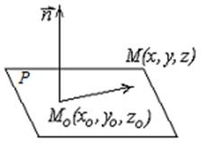

5.2.1. Плоскость как поверхность первого порядка. Общее уравнение плоскости
В декартовых координатах каждая плоскость определяется
уравнением первой степени и каждое уравнение первой степени определяет плоскость.
Возьмем на плоскости  произвольную
точку
произвольную
точку  . Выберем вектор
. Выберем вектор  , перпендикулярный плоскости (нормальный
вектор). Пусть
, перпендикулярный плоскости (нормальный
вектор). Пусть  – произвольная точка
плоскости . Точка
– произвольная точка
плоскости . Точка  принадлежит
плоскости (записывается: ) тогда и только тогда, если .
принадлежит
плоскости (записывается: ) тогда и только тогда, если .
произвольную
точку . Выберем вектор , перпендикулярный плоскости (нормальный
вектор). Пусть – произвольная точка
плоскости . Точка принадлежит
плоскости (записывается: ) тогда и только тогда, если .Так как
,
то скалярное произведение
.
Уравнение плоскости, проходящей через точку с нормальным вектором , имеет вид:
с нормальным вектором , имеет вид:
Уравнение
плоскости, проходящей через точку M(x0,y0,z0) с нормальным
вектором n{A,B,C}
.

Раскрывая скобки и обозначая через , получим уравнение первой степени (так
называемое общее уравнение плоскости):
 Общее
уравнение плоскости
.
Общее
уравнение плоскости
.Составим, например, уравнение плоскости, проходящей через
точку перпендикулярно к вектору .
Искомое уравнение примет вид:
,
.
Если два уравнения и определяют одну и ту же плоскость,
то коэффициенты их пропорциональны:  .
.
.